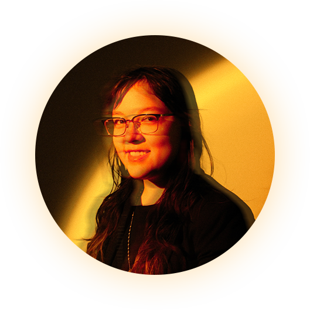

Vianka Jauregui
viankadesign.com
Vianka Jauregui is a graphic designer at the Luminosity Lab in Tempe, AZ. Her passion for design emerged from two distinct interests – a love for crafting art and a keen interest in advertising. When Vianka isn't immersed in the world of design, she finds joy in various creative pursuits such as drawing, painting, embroidering, cooking, and indulging in anime. She also likes attending art festivals to support local artisans. Creating has always been something dear to her heart, and after graduation she hopes to create amazing designs for businesses throughout Phoenix.
